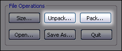
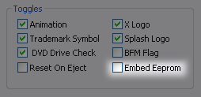
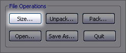

| XBtool - XBOX BIOS Mangler |
!!!!!!!!!!!!!!!!!!!!
WARNING !!!!!!!!!!!!!!!!!!!!
XBtool is under ongoing developement. Bugs can and will happen.
If you plan to use XBtool to modifiy a BIOS then be fully aware that
you are
responsible for what happens. It is entirely possible that a bug in some
patch code, a bug in your flashing software, a power outage, a random gamma
ray,
or the detonation of an electromagnetic pulse weapon could render your Xbox
dead. If you have no way to recover from a bad flash then seriously consider
whether the risk is acceptable to you.
Use this software at your own risk!
!!!!!!!!!!!!!!!!!!!! WARNING
!!!!!!!!!!!!!!!!!!!!
***** LBA48 Warning *****
For those moving from a non-LBA48 BIOS, if your drive is
greater than 137GB and you already have a partition 6 which goes up to the
137GB barrier then
choosing the partitioning option "Partition 6 Takes Rest of the Drive" will
result in data corruption when the drive is written to. You'll need to
reformat the drive if you want to resize your partition 6 to use all available
space.
**********
Editing support for: X2 4981,
X2 4979, X2 4978.03, X2
4977, X2
4976.02, Evox M7, EvoX D.6
About XBtool
LBA48 and Partition Table Options
BIOS Type
DVD Drive Check Option
Fan Speed Option
Boot Options
Pack / Unpack
BFM Packer (Convert to BFM)
BFM Flag Option
Embed Eeprom
Embed HD Key
File Sizing
"Config\More
Configs" Folder
Notes
Things to Do
Things to Watch Out For
Bug Reports
Thanks
History
XBtool Unpacks, Packs, and Patches XBOX BIOS/Kernel Files.
You'll need to supply your own RC4 key for encrypted BIOSes. If you are
working with a BIOS which works with both the original
xbox and the newer revisions then you don't need an RC4 key--use the included "Multi.ini" as-is.
Packing and unpacking functions are provided via Paul Bartholomew's xbflash.
Without xbflash, XBtool would not have been possible.
Contents
| LBA48 Support and Partition
Table Options |
***** LBA48 Warning *****
For those moving from a non-LBA48 BIOS, if your drive is
greater than 137GB and you already have a partition 6 which goes up to the
137GB
barrier
then
choosing
the partitioning
option "Partition
6 Takes Rest of the Drive" will result in data corruption when the drive
is written to. You'll need to reformat the drive if you want to resize your
partition 6 to use all available space.
**********
LBA48 support was implemented by Paul Bartholomew (oz_paulb).
Enabling this option breaks the 137GB limit on hard drive space.

The drop down menu contains 4 options:
- Use Standard Partition Table
- Partition 6 Takes Rest of the Drive
- Partition 6 Takes up to 137GB / Partition 7 Takes Rest
- Partition 6 Takes up to 137GB / No Partition 7
These options are only defaults. If a partition table exists on the hard
drive, then it will override these options.
Setting the Ignore Hard Drive Partition Table option will cause the kernel
partition table to override the hard drive table. This option should normally
be off. It's only useful if you have a partition table written to the hard
drive and there is some reason (patition table corruption, for example) you
need that partition table to be ignored.
Contents

The BIOS type drop-down menu is where you choose the type of BIOS you plan
to be working with. Each item in the menu corresponds to a file in the 'Config'
folder. XBtool comes with just one config file installed: 'Multi.ini'. Other
useful config files can be found in the 'Configs\More Configs' folder. You
will need toopen the config files in 'Configs\More Configs' and add a proper
RC4 key in order to use them. No RC4 keys are supplied with XBtool.
Contents

Unchecking this box will disable the DVD drive check so that the Xbox
will boot with no DVD drive installed. This might be useful if your DVD
drive is dead.
This patch is built-in to later x2 kernels. Disabling the DVD check does
not prevent DVDs from booting.
Contents

The minimum selectable speed is 20%--which is the default Xbox fan speed.
(The absolute minimum is 0, but XBtool won't set it lower than 20%.) The
max
speed
is 100%. Internally the speed percentage will be rounded down to the nearest
even number, so a setting of 25% will result in an actual setting of 24%.
I've tested the voltage at the fan header (with the fan connected and running)
and got a reading of 6.80 volts at speed 20%. The voltage went up at about
0.125 volts per 2% from there, reaching 11.80 at speed 100%. I have read
that the Xbox actually uses pulse-width modulation to control fan speed,
so these voltages are probably just apparent voltages measured with a slow
voltmeter.
Use with caution. I don't know if there are any issues with user
selected speed settings. Turning it up may help cooling but if the Xbox
automatically
shifts up the speed when it gets hot (does it?) then that feature could become
disabled. Setting it too high could reduce fan life.
Contents

The kernel will try to load the xbe's in top to bottom order. Back-slashes can be used for dashes in subfolders.
All supported kernels now have 128 character
limits on the dashboard pathnames. There are 3 edit boxes, one for each of
the
first 3 dashboard pathnames. If none of the first 3 are found then the
kernel will
attempt to load c:\xboxdash.xbe.
Contents

The unpack function allows you to decrypt, decompress, and split
the BIOS into separate kernel, 2bl, and remainder files. The pack function
puts it all back together again.Packing and unpacking should work with
any BIOS, provided you have the proper
config file for the BIOS you are working on.These functions won't
be of use to most users--if you don't know why you would need them then you
probably don't..
Contents
| BFM Packer (Convert
to BFM) |

If you plan to use this feature, please read the following
section in its entirety.
Packs kernels so that they can be used with the Phoenix
loader. BFM BIOS's are packed in the same way that debug BIOS's are, so use
a debug config file. This
option is only for conversion of a non-BFM BIOS. You should leave the
'Convert to BFM' box unchecked if the BIOS is already BFM.
In order to enable this feature you'll need to place a
config file named "bfm.ini" and an image file named "bfm_2bl.img" in
the "Config\BFM\" folder.
You can get
the image file by unpacking a BFM BIOS and renaming its
2bl and image. The config file should be a
debug config named and should contain an RC4 key--preferably a debug
RC4 key.
The convert to BFM option is only for packing/saving BIOS files. It
has no effect when opening or unpacking. If the BFM packing
option is selected then the config file chosen under BIOS
Type is ignored (when saving/packing).
Step by step:
First you'll have to set everything up so that XBtool can do the conversions:
Prerequisite: Make sure you have the debug RC4 key and the latest XBtool.
- Move or copy
the file 'Debug.ini' from the XBtool's 'Config\More Configs\' folder
up to the 'Config\' folder.
- Find the line in 'RC4_KEY=' in 'Debug.ini' and
insert the debug RC4 key
then save the file.
- Open 'Config\BFM\bfm.ini', find the line in 'RC4_KEY=' and
insert the
debug RC4 key then save the file.
- Launch XBtool, choose BIOS type 'Debug', and
unpack some BFM BIOS such
as the BFM version of X2 4979.
- Move or copy the newly unpacked '2bl.img' file to XBtool's 'Config\BFM\'
folder and rename it 'bfm_2bl.img'.
Now you can convert both supported and unsupported BIOS's to BFM:
To convert any BIOS, editable by XBtool or not, just unpack it, check the
'Convert to BFM' box, click the 'Pack...' button, select the kernel of the
newly unpacked BIOS ('xboxkrnl.img'), then choose where to save the coverted
BIOS.
If you want to edit a supported BIOS just open it, make your changes, check
the 'Convert to BFM' box, and save.
Contents

This toggles the boot from media flag in the kernel. Checking the box means
the saved kernel will not display the Xbox logo screen when booting from
media.
Don't set the BFM flag for BIOS files intended for flashing to a
modchip or the TSOP. The BFM flag option is intended for toggling
the flag in kernels already packed in a BFM package. (The Convert to BFM
function ignores this setting
and will instead ask if you'd like to set the flag before packing the BIOS.)
Contents

Instead of reading the EEPROM info out of the actual
EEPROM it will be read from an EEPOM image stored inside the kernel. This
may be useful for recovery purposes. For example, if your eeprom has been
corrupted
or
has bad config data, or for unlocking a hard drive (assuming you have a backup
of the EEPROM from the machine the drive was locked with).
This also may be useful to prevent being banned from Live!, but more testing
is needed--there's nothing to stop an app from going directly to the EEPROM
rather than using the kernel functions (as far as I know). It won't stop
you from connecting to Live!, but if your embedded EEPROM info is different
from the real EEPROM info then you shouldn't get banned. Again, this assumes
Live! doesn't bypass the kernel EEPROM functions. This does not mean you
can play on Live! with your modchip active. You can't. This wasn't my main
purpose for creating this patch and whether it really prevents your machine
from being banned is purely speculative until it's been tested.
To embed an EEPROM you'll need a backup of your own or one you've picked
up somewhere else. Name it "eeprom.bin" and place it in the "Patch
Data" folder.
You can use eepmod (by Superfro / Dextrose) to modify your EEPROM parameters.
The changes should be shown in Avalaunch, Evox or whatever dash you use (assuming
it can display info such as serial number, MAC address, online key, etc.).
Config Magic reads the actual hardware, so don't be surprised when it doesn't
reflect changes you may have made.
What happens if you lock your drive while using an embedded EEPROM image
depends on the application doing the locking. ConfigMagic will lock the drive
using info from the actuall EEPROM. Other applications may use the embedded
EEPROM info.
Contents

Embedded HD Key Patch (Evox M7 & X2 4981 BIOS's only in this version)
Causes the hard drive key to be read from the kernel rather than calculated
using the EEPROM & hard drive info. Only applies to unlocking. If you
lock your drive while using this patch, the password will still be generated
from the EEPROM and HD info.
Could be used to recover a locked hard drive. Could also be useful if you
use an embedded EEPROM to help prevent your Xbox from being banned from Live!
Using this patch you can embed a fake EEPROM and still keep your HD locked.
You can get your HD key by loading ConfigMagic. Use the key shown at the
bottom of the ConfigMagic screen, not the "unique HDD key" shown
below the DVD drive model. I prefer to use the ConfigMagic backup function,
then copy the HD key from the "EEPROMBackup.TXT" backup file. Look
for a line such as the one below.
XBOX HDD PASSWORD = D37FE980DC8B94A9110EE4DB64AE68DB0AE8C64C
In this case "D37FE980DC8B94A9110EE4DB64AE68DB0AE8C64C" is the
HD key you'll use in XBtool.
Contents

You do not need to open a BIOS file to resize it! When
saving a file the resulting BIOS file will be saved to the size selected
in the XBtool dialog
or to the
minimum
size for the currently opened BIOS, whichever is larger, but if you just
want to resize a BIOS file you can use the 'Size...' button.
When using the size button, BIOS files are not opened--so it works with any BIOS
file--but blindly cut or mirrored to the
selected size. No
minimum
size checking is done when the size button is used, so it is up to you to
make sure you don't cut a BIOS to a size smaller than its minimum size. All
debugs that I am aware of must not be sized to smaller than 512k. Some BFMs
must
be 1MB.
Contents
| "Config\More
Configs" Folder |
This folder contains some useful config files. You will
need to enter the proper RC4 key and copy them to the
Config folder to use them.
The format for the RC4 key line in the config
file is like so:
RC4_key=0x00 0x01 0x02 0x03 0x04 0x05 0x06 0x07 0x08
0x09 0x0A 0x0B 0x0C 0x0D 0x0E 0x0F
Contents
The color options will be enabled when
no kernel is loaded. This is intentional. It allows the making of color
presets without having to load a kernel.
Persistent options are stored in the Windows registry. Use the CleanRegistry
app, which can be found in the Config folder to get rid of XBtool's registry
entries.
Contents
- Better documentation.
- Some docs for developers.
Contents
- Never use a new XBtool
executable with older DLLs.
- Check the history section to see that the config
file keys XBtool expects haven't been changed if you have your own configs.
- If
something didn't happen the way you expected, check the log file.
- If you don't like frequent updates, feel
free to ignore XBtool releases and it will be just like
no update happened at all.
Contents
I need good feedback if anyone suspects a bug. Bug reports like, "Sometimes
xbtool makes bad bioses," are not helpful. If you suspect XBtool made
a bad BIOS, reload that BIOS into XBtool and see if it reads ok. Then note
the settings and include them in your report. If possible, try to see if
the bug is repeatable. I may ask to see a bad BIOS file, but please don't
send
any unless I ask.
Contents
(in no particular order)
- Paul Bartholomew for xbflash and LBA48 support.
- Superfro for his BIOS mods.
- k3rn3l and MomDad for ideas, info and other support.
- SantMat for his ultra-smooth no-animation, no-DVD-check, and LED color
patches.
- Team Phoenix for info and other support.
- Pixel8
- All those who have taken the time to report bugs.
XBtool is very much a collaborative effort. Without these people, it would,
at best, be much less functional than it is, and, at worst, nonexistent.
Contents
See website.